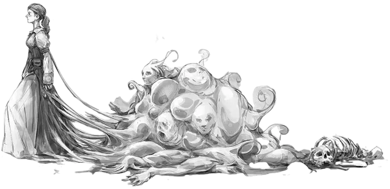

Зрелый облекс
Adult Oblex
Средняя Слизь, законно-злая

Класс Доспеха 14
Хиты 75 (10к8 + 30)
Скорость 20 футов
| мод | спас | ||
|---|---|---|---|
| СИЛ | 8 | −1 | −1 |
| ЛОВ | 19 | +4 | +4 |
| ТЕЛ | 16 | +3 | +3 |
| мод | спас | ||
|---|---|---|---|
| ИНТ | 19 | +4 | +7 |
| МДР | 12 | +1 | +1 |
| ХАР | 15 | +2 | +5 |
Навыки Восприятие +4, Обман +5
Иммунитет к состояниям ослепление, сбивание с ног, очарование, глухота, истощение
Чувства слепое зрение 60 футов (слеп за его пределами), пассивное Восприятие 14
Языки Общий, и два любых языка
Опасность 5 (1800 опыта)
Бонус мастерства +3
Среда обитания Болото, Город, Подземье
Особенности
Навыки. Зрелый облекс владеет одним из следующих навыков: Магия +7, История +7, Природа +7 или Религия +7.
Аморфный. Облекс может перемещаться сквозь пространство шириной до 1 дюйма без протискивания.
Боязнь огня. Если облекс получает урон огнём, он до конца своего следующего хода совершает с помехой броски атаки и проверки характеристик.
Врождённое колдовство. Базовой характеристикой облекса является Интеллект (Сл спасброска от заклинания 15). Он может накладывать следующие заклинания, не нуждаясь в компонентах:
3/день каждое:. обнаружение мыслей [detect thoughts], очарование личности [charm person] (как заклинание 5-го уровня), сверкающие брызги [color spray], удержание личности [hold person] (как заклинание 3-го уровня)
Сернистое воплощение. Облекс бонусным действием может вытянуть часть самого себя, что принимает вид одного из существ Среднего или меньшего размера, чьи воспоминания были поглощены. Появившаяся сущность выглядит, ощущается и звучит так же, как и существо, чьи воспоминания были поглощены облексом, но от него исходит запах серы. Облекс может создать таким образом 1к4+1 различных существ каждое из которых связано с его телом слизистым усиком, растягивающимся на дистанцию до 120 футов. Во всех практических отношениях, эта сущность является частью облекса и таким образом облекс занимает своё пространство и пространство сущности. Слизистый усик невосприимчив к урону, но разрывается, если нет щели хотя бы шириной 1 дюйм между основным телом облекса и сущностью. Сущность исчезает, если усик будет разорван.
Действия
Мультиатака. Облекс может один раз атаковать ложноножкой и использовать Поглощение воспоминаний.
Ложноножка. Рукопашная атака оружием: +7 к попаданию, досягаемость 5 футов, одна цель. Попадание: 7 (1к6+4) дробящего урона плюс 5 (2к4) урона психической энергией.
Поглощение воспоминаний. Облекс выбирает целью одно существо в пределах 5 футов от себя, которое может видеть. Цель должна преуспеть в спасброске Мудрости Сл 15, иначе получит 18 (4к8) урона психической энергией и состояние «потеря памяти», пока не закончит короткий или продолжительный отдых или не попадёт под воздействие заклинания высшего восстановления [greater restoration] или полного исцеления [heal]. Конструкты, слизи, растения и нежить автоматически преуспевают в спасброске.
Пока цель находится под воздействием «потери памяти», она должна делать бросок к4 и вычитать выпавшее значение из любой проверки характеристики или броска атаки. Каждое следующее поглощение воспоминаний после первого усиливает эффект и увеличивает вычитаемую кость: к4 становится к6, к6 становится к8 и так далее, пока кость не станет к20, после чего цель теряет сознание на 1 час. Затем эффект заканчивается. Когда облекс поглощает память существа, он автоматически выучивает все языки, что знала цель, и получает все владения цели, за исключением владений спасбросками.
Описание
После экспериментов на слизи, желатиновых кубах и студнях, которыми кишат глубины Подземья, свежеватели разума вывели особый вид слизи. Облекс – слизь, способная атаковать разум других существ.
Будучи хитрыми хищниками, эти склизкие желеподобные создания преследуют жертву в поисках воспоминаний, которых они так отчаянно жаждут.
Когда облексы поглощают мысли, иногда убивая свою добычу, они могут сформировать странные копии своих жертв, что помогает им добывать ещё больше страдальцев для своих мрачных хозяев.
Зрелые и древние облексы. Только сформированный облекс испытывает недостаток способностей своего прародителя. Они ищут лишь воспоминания и растут до тех пор, пока не смогут выдавать себя за своих жертв.
Взрослые облексы, зовущиеся зрелыми и древними, поглотили так много воспоминаний, что могут сформировать копию существа из субстанции собственного тела, которая будет связана с облексом длинным тонким слизистым усиком, отправляя её приманивать жертв в свою западню. Эти скопированные создания неотличимы от их жертв, за исключением лёгкого запаха серы. Облексы используют этих созданий, чтобы заманивать жертв в опасную ловушку или незаметно проникать в поселения, чтобы поживиться более предпочтительной целью.
Пожиратели воспоминаний. Облексы питаются мыслями и воспоминаниями. Чем ум острее, тем он вкуснее, поэтому очевидно, что облексы охотятся преимущественно на цели, наделённые интеллектом, такие как волшебники и другие заклинатели. Когда подходящая еда попадает в зону их досягаемости, облекс выбрасывает своё тело вверх, чтобы поглотить жертву. После стекания с жертвы, он похищает разум, оставляя её озадаченной и в растерянности.
Природа слизи. Облекс не нуждается во сне.